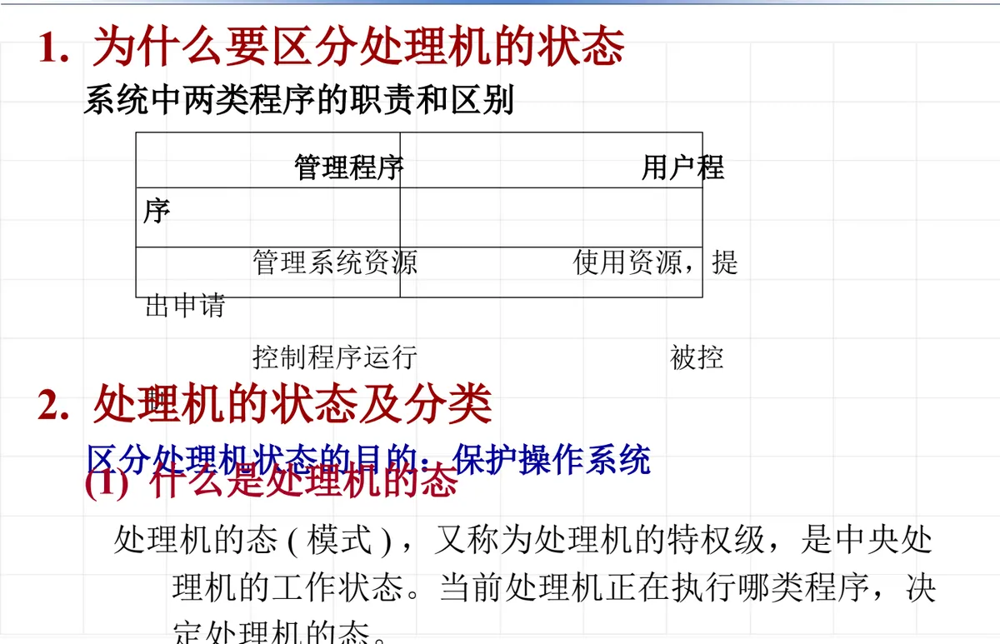
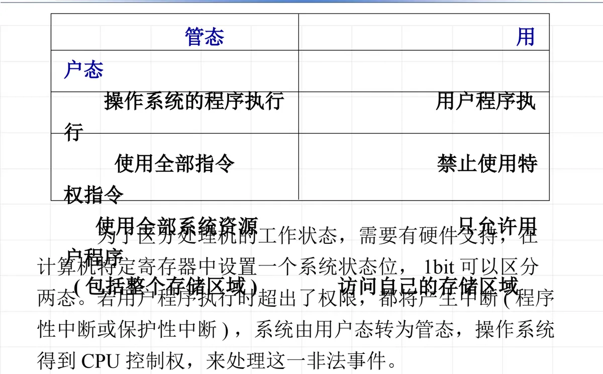

操作系统原理 · 第 2 章 结构与硬件支持
2.4 处理机的特权级
上一节末尾留下一个问题：虚拟技术要落地，硬件必须提供哪些支持？第一个答案就是特权级。这一节讲清三件事：为什么要给处理机分状态、管态与用户态各能做什么、这两种状态靠什么硬件机制区分和切换。它是理解后面中断处理、系统调用和存储保护的前提。
1. 为什么要区分处理机的状态
系统中的程序可以分成两类，它们的职责完全不同：管理程序（操作系统）负责管理系统资源、控制程序运行；用户程序使用资源、提出申请，并接受控制。一个是管理者，一个是被管理者，如果两者拥有同样的权限，被管理者就可能破坏管理者。

因此，区分处理机状态的目的就是保护操作系统——让用户程序无法直接触碰系统的关键资源和关键指令。
2. 处理机的状态及分类
（1）什么是处理机的态
处理机的态（模式），又称为处理机的特权级，是中央处理机的工作状态。判断依据很直接：当前处理机正在执行哪类程序，就决定处理机处于哪种态——执行管理程序时是管态，执行用户程序时是用户态。
（2）管态与用户态
处理机的状态至少需要区分两种：
- 管态（Supervisor mode，又称系统态）：操作系统的管理程序执行时机器所处的状态。在此状态下，处理机可使用全部指令（包括一组特权指令），使用全部系统资源（包括整个存储区域）；
- 用户态（User mode，又称目态）：用户程序执行时机器所处的状态。在此状态下禁止使用特权指令，不能直接取用资源与改变机器状态，并且只允许用户程序访问自己的存储区域。
| 比较项 | 管态（系统态） | 用户态（目态） |
|---|---|---|
| 何时处于该态 | 操作系统的管理程序执行时 | 用户程序执行时 |
| 可使用的指令 | 全部指令，包括一组特权指令 | 禁止使用特权指令 |
| 资源使用 | 使用全部系统资源，包括整个存储区域 | 不能直接取用资源与改变机器状态 |
| 存储访问范围 | 不受限制 | 只允许访问自己的存储区域 |
（3）靠什么区分：状态位与特权级编码
区分处理机的工作状态需要硬件支持：在计算机的特定寄存器中设置一个系统状态位，1 个 bit 就足以区分两态。若用户程序执行时超出了权限，都将产生中断（程序性中断或保护性中断），系统由用户态转为管态，操作系统由此得到 CPU 控制权，来处理这一非法事件。

真实处理器用若干位来标识特权级，位宽越大，可区分的级数越多。课件举了两个例子：
- 80386 保护模式：用 CS 段选择字的低 2 位表示当前特权级 CPL——00 表示 system（最高特权，即内核），11 表示 user，01 和 10 留给中间特权级；
- ARM：用 CPSR 状态寄存器中的低 5 位 M[4:0] 表示处理器模式，编码如下表。
| M[4:0] | 处理器模式 |
|---|---|
| 10000 | user |
| 10001 | FIQ |
| 10010 | IRQ |
| 10011 | supervisor |
| 10111 | abort |
| 11011 | undefined |
| 11111 | system |
注记：上表是 32 位 ARM（ARMv7 及其以前）的模式编码。到 64 位 AArch64，处理器模式被简化为 EL0～EL3 四个异常级别，FIQ、IRQ、abort、undefined 等不再作为独立模式存在，但「用户级与特权级分离」这一思想没有变。
3. 特权指令
处理机的特权指令是只能在管态下执行、不允许用户程序使用的指令，课件把它们归为三类：
- 涉及外部设备的输入/输出指令，以及允许/禁止中断的指令；
- 修改特殊寄存器的指令；
- 改变机器状态的指令。
这三类指令有一个共同点：它们都会影响整个机器的状态或全体程序的运行环境。让用户程序随意执行，就等于把系统的控制权交了出去——这正是必须把特权级与特权指令成对设计的原因。
4. 处理机状态的切换
两态之间如何来回切换，课件给出了明确的清单。
（1）用户态转到核态（管态）
- 用户程序要求操作系统提供服务，执行系统功能调用（中断或系统调用指令）；
- 用户程序运行时，偶然发生一次硬件中断；
- 用户程序产生错误（程序性中断）；
- 用户程序企图执行特权指令（处理方式同上一条）。
（2）核态转到用户态
中断返回——注意，这条指令本身也是特权指令。
把两张清单放在一起看，能看出一个重要的不对称：从用户态进入管态的入口有好几个（请求服务、中断、出错、越权），而且绝大多数是「事件驱动」的；而从管态回到用户态只有一条路——中断返回，并且必须由操作系统主动执行。这种不对称正是保护机制的落脚点：进入特权态必须经过受控的入口，离开特权态则要由系统自己决定时机。
本节小结
- 系统中有两类程序：管理程序管理系统资源、控制程序运行；用户程序使用资源、提出申请并被控制。区分处理机状态的目的是保护操作系统；
- 处理机的态（又称特权级）是中央处理机的工作状态，由当前正在执行哪类程序决定；至少区分两态：管态（系统态，可使用全部指令包括特权指令、使用全部系统资源）与用户态（目态，禁止特权指令、不能直接取用资源与改变机器状态、只能访问自己的存储区域）；
- 区分两态需要硬件支持：特定寄存器中的系统状态位（1 bit 即可）；用户程序越权将产生程序性中断或保护性中断，系统由用户态转为管态，操作系统取得 CPU 控制权处理非法事件；
- 特权级标识的实例：80386 保护模式用 CS 段选择字低 2 位（CPL），00 为 system、11 为 user，01/10 为中间级；ARM 用 CPSR 的 M[4:0]，user、FIQ、IRQ、supervisor、abort、undefined、system 各有编码；
- 特权指令包括：涉及外部设备的 I/O 指令与允许/禁止中断的指令、修改特殊寄存器的指令、改变机器状态的指令；
- 状态切换：用户态转管态的途径是系统功能调用、硬件中断、程序出错、企图执行特权指令；管态转用户态只有中断返回一条路，且该指令本身也是特权指令。